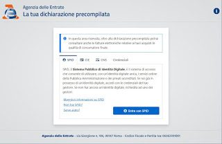
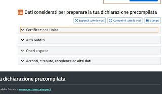
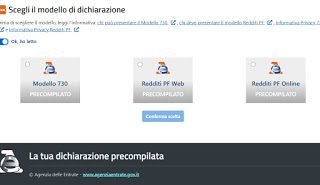

#APPROFONDIMENTI👥
⬆️📌COME FARE IL 730 DA SOLI
Per chi lavora con un contratto a tempo indeterminato o determinato è essenziale procedere annualmente con la dichiarazione dei redditi, utilizzando il modello 730 fornito dall'Agenzia delle Entrate. In passato questo compito era affidato ai CAF o ai commercialisti (anche per gli utenti privati senza IVA), ma ai giorni nostri possiamo benissimo fare il 730 online utilizzando il modulo online precompilato, avendo l'accortezza di controllare se i dati inseriti sono corretti prima di procedere con l'invio.
👇 DI SEGUITO UNA BREVE GUIDA.
✅ Per poter accedere a questo comodo servizio dovremo prima di tutto procurarci le nostre credenziali SPID, fondamentali per poterci autenticare come cittadini e ottenere la nostra scheda informativa. Se non ancora lo possiedi ecco il link d'istruzioni per ottenerlo 👉 SPID.
✅ Con le credenziali SPID attive abbiamo tutto il necessario per poter "dialogare" con l'Agenzia delle Entrate riguardo il 730 online. Per procedere non dobbiamo far altro che aprire il sito dedicato alla Dichiarazione Precompilata.

✅ Per vedere subito il 730 precompilato dall'Agenzia delle Entrate premiamo sulla voce Visualizza, presente accanto alla data di visualizzazione della dichiarazione. Nella nuova pagina dovremo prestare attenzione alle informazioni presenti, visto che su queste vengono effettuati i calcoli necessari per il 730 e in particolare per calcolare i soldi che dobbiamo dare o i soldi che dobbiamo ricevere dallo Stato.
✅ Nella nuova finestra successiva che abbiamo aperto avremo a disposizione 4 sezioni d'informazioni, tutte utili per il calcolo del 730 online.

✅ Nella sezione Certificazione Unica avremo accesso a tutte le certificazioni rilasciate dai datori di lavoro per cui abbiamo lavorato nell'ultimo anno solare (i famosi CUD, come si chiamavano fino a qualche anno fa). Controlliamo che siano presenti tutte le certificazioni dei datori di lavoro e confrontiamo i dati con le certificazioni che il datore ci ha consegnato in via cartacea o digitale. Se non abbiamo ottenuto nessuna certificazione, conviene chiederla subito al datore di lavoro (anche in caso di licenziamenti successivi), così da poter sempre confrontare i dati in possesso dell'Agenzia delle Entrate con quelli che il datore ha fornito a noi lavoratori.
✅ Nella sezione Altri redditi sono indicate altre fonti di reddito di cui beneficiamo e che concorrono al calcolo del 730 online: se siamo lavoratori dipendenti di solito questa sezione è vuota salvo eredità, possedimenti terreni o vincite consistenti al gioco.
✅ Nella sezione Oneri e spese sono racchiuse tutte le spese che abbiamo realizzato nel corso dell'anno solare precedente e che concorrono ad abbassare il quantitativo di tasse che dobbiamo pagare: nella maggior parte dei casi troveremo tutte le spese sanitarie che abbiamo effettuato in farmacia o le prestazioni specialistiche per cui abbiamo chiesto la fattura. Per riempire questa sezione dobbiamo sempre fornire il codice fiscale quando compriamo farmaci in farmacia o farci rilasciare la fattura dai medici specialisti. Se manca qualcosa o qualche fattura specialistica è "assente", conviene rivolgersi al CAF o ad un commercialista per il ricalcolo del 730.
✅ Nell'ultima sezione Acconti, ritenute, eccedenze ed altri dati sono presenti eventuali acconti e ritenute dalla dichiarazione dell'anno precedente o altre informazioni utili.
✅ Dopo aver controllato attentamente tutti i dati premiamo in alto sul tasto Scegli il modello, rispondiamo Sì alle indicazioni per la procedura guidata e scegliamo attentamente il tipo di lavoro in base alle domande che il sito pone, così da poter orientare la scelta tra i vai modelli disponibili. Se siamo lavoratori dipendenti e vogliamo subito accedere al 730 online possiamo anche rispondere No alla prima domanda per ottenere subito i modelli forniti dall'Agenzia delle Entrate.

✅ Per il 730 online spuntiamo la voce Modello 730 precompilato e premiamo in basso su Conferma scelta, così da poter sbloccare il download del 730 vero e proprio. Per avviare il download premiamo sul tasto Modello PDF con la bandiera italiana, così da scaricare una versione (provvisoria) del 730 che andremo a inviare successivamente. Anche in questo caso apriamo subito il PDF e controlliamo che tutti i dati inseriti siano corretti.
✅ Per passare alla fase successiva della dichiarazione premiamo sul tasto Modifica nella schermata di download del 730; questo passo è necessario perché dobbiamo comunque scegliere a chi destinare l'8 per mille, il 5 per mille e il 2 per mille.
✅ Per sbrigare questa formalità apriamo la pagina di modifica come visto in alto, premiamo sulla sezione Scelte 8, 5, e 2 per mille ed effettuiamo la scelta per tutte le voci. Al termine portiamoci in basso nella sezione Stampa e invia, così da poter accedere alla dichiarazione finale.
✅ Nella sezione Stampa e invia avremo a disposizione un interessante calcolatore automatico dei crediti e dei debiti, che mostrerà velocemente quanti soldi dobbiamo avere dallo Stato (se dal 730 risulta che stiamo in credito) o quanti soldi dobbiamo invece dare allo stato (se dal 730 risulta che stiamo in debito).
✅ Effettuato questo calcolo apponiamo il segno di spunta alla casella su Esprimo il consenso al trattamento dei dati sensibili indicati nella dichiarazione, premiamo sul tasto Invia e confermiamo dove necessario per inviare il 730 compilato e firmato all'Agenzia delle Entrate. Di fatto abbiamo finito: consigliamo di scaricare subito la versione finale del 730 inviato premendo sul tasto Modello PDF, così da avere sempre una copia del documento in formato digitale (che consiglio di salvare in un posto sicuro). Una volta inviato non si può tornare indietro: meglio quindi controllare attentamente ogni sezione e, in caso di dubbi o incertezze, chiedete aiuto ad un CAF, ad un patronato o ad un commercialista di fiducia.
⬇️📌 CONCLUSIONI:
Fare il 730 online non è poi così difficile, visto che i dati su cui ricavare il calcolo sono già in possesso dello stato italiano e dobbiamo solo controllare che i datori di lavoro hanno inviato i dati correttamente, controllare le spese sanitarie (che aiutano tanto a far scendere il numero di tasse da pagare) e scegliere a chi destinare l'8 per mille, il 5 per mille e il 2 per mille. Se incontriamo qualche difficoltà, se manca qualche certificazione o se la somma da pagare a debito è molto alta conviene contattare un commercialista, visto che rifare manualmente un 730 da zero non è alla portata di un comune cittadino.
(fonte articolo Navigaweb.net)
Se lo desideri, iscriviti ai mie canali social per restare aggiornato ⬇️
Social MediaInoltre se hai trovato utile ed interessante questo articolo, non esitare a condividerlo, a lasciare un tuo mi piace 👍, o seguire la mia pagina Facebook, per sostenermi e continuare ad informare. Grazie anticipatamente a chi vorrà farlo.